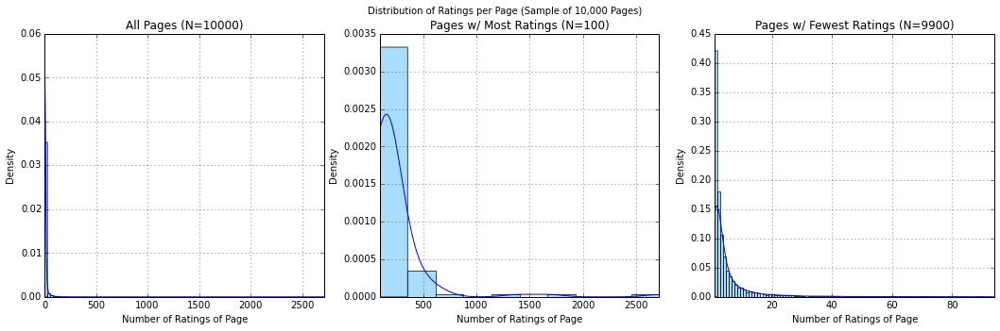
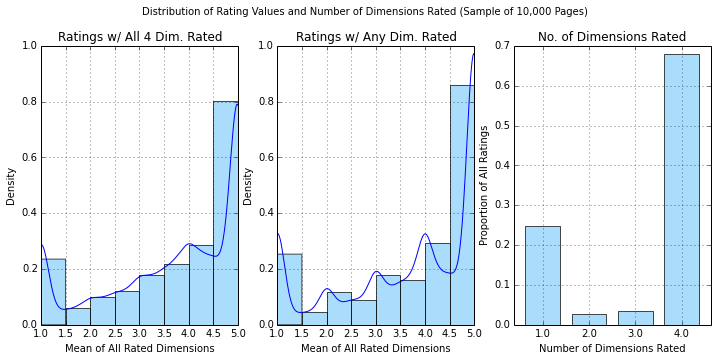
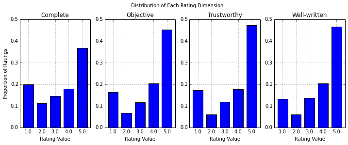
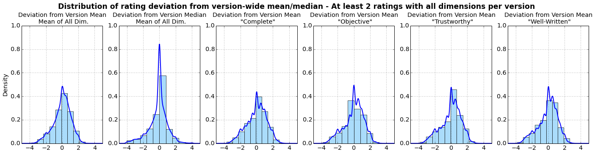
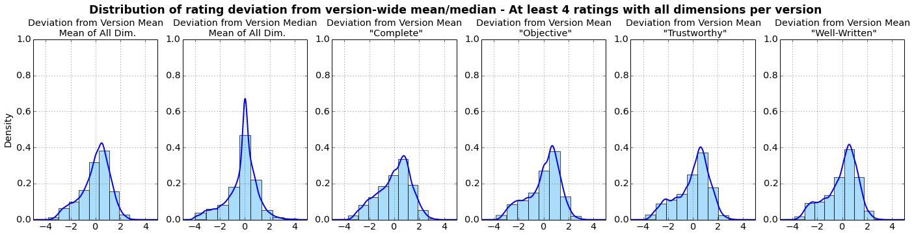
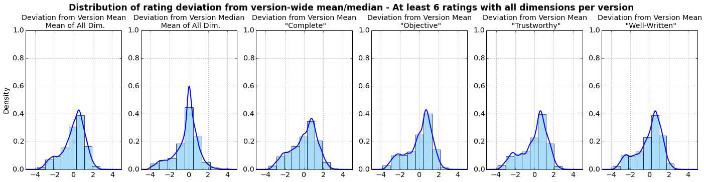
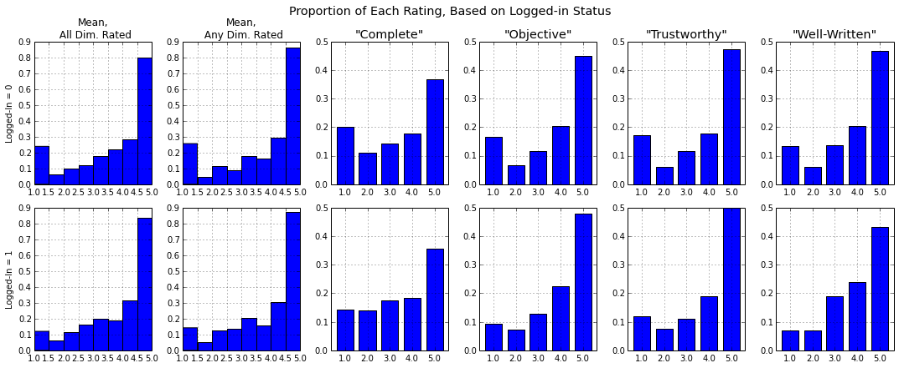
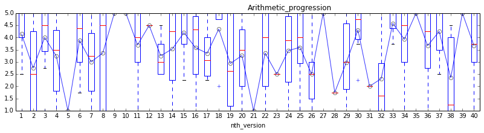
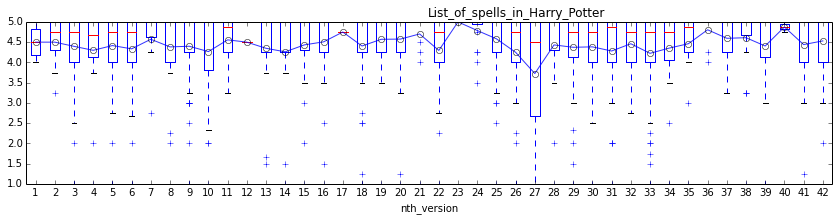
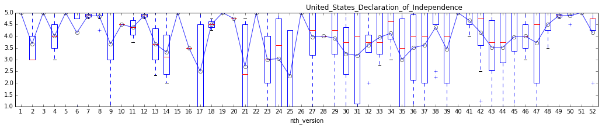

Analysis of Wikipedia ratings data
What makes a good Wikipedia page?
Using data on ratings for Wikipedia pages, I try to explore that question.
Wikimedia provides a one-year dump of all ratings on Wikipedia, from July 22, 2011 up to July 22, 2012. This file contains almost 50 million records of almost 12 million unique ratings (NB: there are 4 dimensions for each rating, so one person rating an article will provide up to 4 data points).
The file (approx 441.6 MB gzipped) is hosted here: http://datahub.io/dataset/wikipedia-article-ratings/resource/8a218330-6ac3-40d1-ae0d-4224f57db214
There are 4 dimensions on which a page could be rated:
trust in my cleaned dataset)obj)comp)writ)A user could rate any or all dimensions for each page. In the data provided, in addition to the values for each rating dimension, we have:
page_id and page title, identifying the page being ratedrev_id identifying the particular version (i.e. "revision") of the page that was rated1 or 0) indicating whether the user rating the page was logged in (the actual user's identity is anonymized out of the data)Given the anonymized data, it is impossible to know whether users were able to rate a page more than once, but given the fact that most of the ratings come from non-logged-in users, it is certainly possible.
My goal for this analysis was to first analyze the ratings data itself to see whether the ratings seemed to provide a useful measure of page quality. Then, I wanted to combine the ratings data with data on the actual page versions rated to look at how different kinds of edits affect the page's rating. Namely, is there a way to quantify which edits do the most to improve a page in any or all of the four rating dimensions? For example, are big edits (based on number of characters edited) better than small edits? Do small edits improve score for quality of writing (writ), while big edits improve completeness (comp)? Are logged-in users better editors than anonymous users?
If there were a way to identify particularly helpful edits in terms of improving article quality, then Wikipedia could:
The first step was cleaning the ratings data. The iPython Notebook showing all the cleaning code and output is here. In addition to reshaping the data so that each rating has one observation, rather than four, I cut the data to a sample of some 79,000 ratings for 10,000 different pages.
My exploratory analysis is documented here. I start by looking at the ratings themselves.
In order for ratings to be any kind of measure of page quality, people have to actually rate pages. How many ratings to pages get in the year-long sample? And do some pages get significantly more than others?
As with a lot of data dealing with popularity (e.g. population of cities), the data appear to follow Zipf's law insofar as a small number of pages get a huge number of ratings, but the number of ratings quickly drops off, ending with a long right tail. Here is a chart illustrating the distribution:
Figure 1

The average page in the sample has 7.85 ratings in the year-long period (standard deviation of 42.1), though of course the sample is of pages with at least one rating in that period. The most-rated page in my sample is "The Hunger Games" with 2,713 ratings. The average page has 3.66 different versions in the sample, with each version being rated an average of 1.63 times.
Most ratings tend to be high on the 1-5 scale.
Figure 2

The above chart shows the distribution of average rating value for each observation. The first plot is the distribution of
rating_all_mean, which is the mean of the 4 rating dimensions when all 4 dimensions are rated (and NA otherwise), while the second plot is the distribution ofrating_any_mean, which is the mean of all rating dimensions that are present (whether there is only 1 dimension rated, or 4, etc.). Note that, for both of these histograms (and all similar histograms below), each bin does not include the right-most boundary except the last, which includes ratings with means from 4.5 to 5, inclusive. The third plot shows the proportions of each rating observation that have 1, 2, 3, or 4 dimensions rated.
Over 40% of observations have ratings that average 4.5 or greater on a scale of 5. Furthermore, almost 70% of users rated all 4 dimensions, while about 25% rated only one dimension, and very few rated 2 or 3. When all four dimensions are rated, the mean rating is 3.66, with a standard deviation of 1.34, and the median is 4.0.
Given the rest of the distribution, there is a larger-than-expected frequency of low ratings (namely, 1s). This bimodality, where there is a peak in the ratings distribution around [4.5, 5] and then around [1, 1.5), is relatively consistent across rating dimensions.
Figure 3

While the rightmost peak (at rating value of 5) is lower for "Complete", all 4 dimensions have another peak at a rating value of 1.
Thus, it appears that raters tend to rate pages at the extremes, either very high or very low. This is true regardless of whether the user rates only 1 dimension or all 4 (see the complete exploration for charts illustrating this).
Is it worth asking users to rate 4 dimensions instead of simply giving each page a 1-5 rating? Each dimension is highly correlated with each other dimension, indicating that a user who gives a high rating to "Complete", for example, is very likely to give a high rating to "Well-written". Here is a table of Pearson correlations between each dimension:
Table 1
Correlation by Dimension Complete Objective Trustworthy Well-written Complete 1.000000 0.715450 0.749500 0.764108 Objective 0.715450 1.000000 0.774930 0.738221 Trustworthy 0.749500 0.774930 1.000000 0.753312 Well-written 0.764108 0.738221 0.753312 1.000000
But, the correlation is not perfect. So, though there is not a whole lot of new information in each dimension, there is some, and depending on the cost to the user to rate each dimension, it may still make sense to have separate categories.
The means for each dimension do generally differ significantly, however, using a paired difference test. For example, here are the p-values from a Wilcoxon test comparing each dimension to each other dimension:
Table 2
Wilcoxon Signed-Rank Test Complete Objective Trustworthy Well-written Complete X 0.000 0.000 0.000 Objective 0.000 X 0.000 0.153 Trustworthy 0.000 0.000 X 0.000 Well-written 0.000 0.153 0.000 X Figures reported are p-values from a Wilcoxon Signed-Rank test performed for each combination of rating dimensions.
All are significantly different with the exception of "Objective" and "Well-Written", which has a p-value of 0.153.
If ratings are indeed useful measures of page quality, and if page quality is something that is consistent for various users of Wikipedia, then we would hope that ratings cluster around the mean. That is, we would want most people to tend to give ratings that are close to a certain average. The bimodality reflected in #2 above might indicate that this is not the case, however.
There are many ways to measure the spread of data like this, but I will focus on the mean absolute deviation (MAD), which is simply the mean of the absolute value of the difference between each observation's value and the mean or median value. Given the fact that both the mean and median rating is quite high, and that rating values are truncated at 5, the distance from the point of central tendency (mean or median) can be higher for lower ratings. Thus it doesn't make as much sense to use the standard deviation, which weights bigger deviations more (since it's the square root of the mean squared error). The MAD can be easily understood as the average difference between a particular rating and the mean/median for all ratings for that page/version.
Table 3
Distribution of MAD by Page Count Mean 25% 50% 75% Abs. Dev. from Page Mean - Mean of All Dim. 49,712 0.956 0.395 0.820 1.333 Abs. Dev. from Page Median - Mean of All Dim. 49,712 0.905 0.250 0.625 1.250 Abs. Dev. from Page Mean - "Complete" 55,500 1.126 0.500 1.059 1.624 Abs. Dev. from Page Mean - "Objective" 53,265 1.103 0.500 1.000 1.500 Abs. Dev. from Page Mean - "Trustworthy" 56,986 1.117 0.500 0.981 1.509 Abs. Dev. from Page Mean - "Well-Written" 60,508 1.040 0.500 0.893 1.418 Only pages with at least 2 ratings were included for this table. The computation for the above table is as follows: 1) Compute the mean/median rating for all observations for a given page; 2) for each observation, calculate the absolute value of the difference between that observation's rating for the particular dimension (or the mean of all dimensions). Thus, the
Meancolumn constitutes the MAD for the given dimension. Note that for the first two rows, labeledMean of All Dim., all observations with less than all 4 dimensions rated are excluded; for the remaining rows, all non-missing ratings for that dimension are included, regardless of whether other dimensions were also rated in that observation.
Table 4
Distribution of MAD by Version Count Mean 25% 50% 75% Abs. Dev. from Version Mean - Mean of All Dim. 34515 0.817 0.275 0.649 1.200 Abs. Dev. from Version Median - Mean of All Dim. 34515 0.758 0.125 0.500 1.125 Abs. Dev. from Version Mean - "Complete" 37403 0.960 0.400 0.826 1.500 Abs. Dev. from Version Mean - "Objective" 36317 0.933 0.333 0.750 1.400 Abs. Dev. from Version Mean - "Trustworthy" 38216 0.958 0.333 0.800 1.484 Abs. Dev. from Version Mean - "Well-Written" 39920 0.902 0.333 0.722 1.333 Only versions with at least 2 ratings were included for this table. See also note to Table 3 above.
Even though the sample only covers a year, it is of course possible that pages would differ significantly between ratings. However, when looking at versions of pages, we see MADs that are smaller, but still relatively large in magnitude. To put this in perspective, consider a version of an article that has only 2 ratings; Table 4 indicates that the average of all 4 rating dimensions for those two ratings would tend to be about 1.6 points apart on a 1-5 scale, meaning that if one rating was a 5 (very high), on average the other rating would be a 3.4 (very mediocre, given the fact that most ratings are, in fact, 4s or 5s).
To further illustrate this, here are plots of the distributions of the non-absolute differences between each observation and the average for that version:
Figure 4

Figure 5

Figure 6

The cutoffs of 2, 4, and 6 were chosen because they represent 100%, 25%, and 10%, respectively, of the sample of versions with at least 2 ratings.
Though there initially appears to be just a rightward skew to the distributions, as we get more ratings per version, the familiar bimodal pattern begins to show up again. Furthermore, the bimodality becomes much more pronounced when looking at versions with even higher numbers of ratings, and it is also more pronounced when looking at pages, rather than versions of pages (no doubt in part because pages tend to have higher numbers of ratings per page, and thus there is more information).
On the one hand, the fact that this bimodality is more clear with a higher N (i.e. more ratings per version) could indicate that we simply have more information and thus have clearer picture of what could be a fundamental, bimodal pattern. However, it could also mean that pages with many ratings are in some way different; for example, pages with higher ratings could be more controversial, leading some to simply give low ratings because they disagree with the content of the page itself, rather than judging the completeness, trustworthiness, objectivity, or quality of writing.
In the dataset, the only information we have about the user rating the page is whether they are logged in or not. Still, given that most users are not logged in, being logged in could indicate that the user is more aware of the standards of Wikipedia, and thus is a better judge of article quality. It could also be that logged-in users are more invested in the quality of Wikipedia and thus will put more effort into providing a full and accurate rating. Still another option is that logged-in users are more likely to have edited the pages themselves, and thus may be either rating their own work or giving a low rating before deciding to edit the page.
Figure 7

Here it appears that logged-in users are less likely to give low ratings. When I look at the MAD for logged-in vs. not logged-in users, the logged-in users have MADs that are significantly (p-value < 0.001) lower than users who are not logged in, meaning that not only are logged-in users less likely to give low ratings, but they tend to give ratings that are closer to ratings for other logged-in users.
In my exploratory analysis, I look at the rating history for the most frequently edited and rated pages, trying to find a pattern of improving quality over time. Here, for example, are plots of the history for three pages that have many versions and high numbers of ratings per version:
Figure 8

Figure 9

Figure 10

The boxplot for each page shows the distribution of
rating_all_mean(i.e. the mean rating when all 4 dimensions are recorded) for each version of the page in our dataset, indexed by version number (rather than, say, date the version was made). The blue line and circles trace the mean, while the red lines are the median.
There certainly does not appear to be a broad upward trend. Indeed, when I look at correlations for all pages in the data set, there is almost no correlation between version number and rating value:
Table 5
Correlation Mean Rating, Any Dimensions Mean Rating, All Dimensions "Complete" "Objective" "Trustworthy" "Well-Written" nth_version 0.063059 0.063983 0.096140 0.035822 0.051972 0.049783
It is possible that, if I can combine versions that, due to the edits being very minor, are essentially the same, that a different trend could emerge. But as of now, there is not much evidence that pages get better over time when quality is measured by user ratings.
I am currently working on merging in data about the actual edits (and other data) from the MediaWiki API. Once I do that, I'll be able to see if certain kinds of edits affect ratings in different ways. For example: